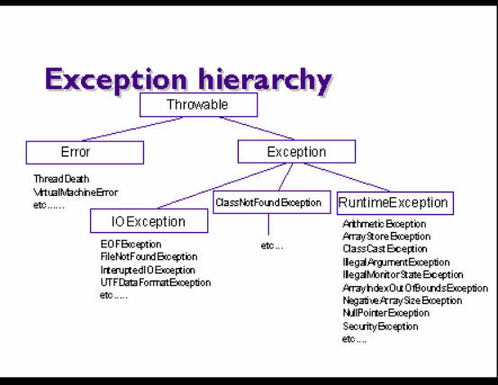

4. Wyj±tki
Jak wiemy, programowanie w Javie sprowadza siê tak naprawdê do tworzenia
obiektów i wywo³ywania na ich rzecz metod (albo te¿ - gdy nie mamy obiektów
- wywo³ywania metod statycznych). W trakcie wykonania metody mo¿e powstaæ
jaki¶ b³±d. Tradycyjna obs³uga b³êdów (a raczej ich sygnalizowanie) polega³o na:
Problemy, które wystêpuj± przy takim podej¶ciu:
W Javie (poszerzaj±cej do¶wiadczenia jêzyka C++) zaproponowany nowy sposób obs³ugi Wyj±tek - to sygna³ o b³êdzie w trakcie wykonania programu
Wyj±tek powstaje na skutek jakiego¶ nieoczekiwanego b³êdu.
Prosty schemat obs³ugi wyj±tków
try { // ... w bloku try ujmujemy instrukcje, które mog± spowodowaæ wyj±tek } catch(TypWyj±tku exc) { // ... w klauzuli catch umieszczamy obs³ugê wyj±tku } Gdy w wyniku wykonania instrukcji w bloku try powstanie wyj±tek typu TypWyj±tku to sterowanie zostanie przekazane do kodu umieszczonego w w/w klauzuli catch
Przyk³ady.
public class NoCatch {
public static void main(String[] args) {
int a = 1, b = 0, c = 0;
c = a/b;
System.out.println(c);
}
}
Exception in thread "main" java.lang.ArithmeticException: / by zero
at NoCatch.main(NoCatch.java:6)
b) Zabezpieczamy siê przed mo¿liwymi skutkami ca³kowitoliczbowego dzielenia przez zero, obs³uguj±c wyj±tek ArithmeticException
public class Catch1 {
public static void main(String[] args) {
int a = 1, b = 0, c = 0;
String wynik;
try {
c = a/b;
wynik = "" + c;
} catch (ArithmeticException exc) {
wynik = "***";
}
System.out.println(wynik);
}
}
W tym przypadku, wykonanie instrukcji c = a/b; spowoduje powstanie wyj±tku
(dzielenie przez zero), a poniewa¿ instrukcja ta znajduje siê w bloku try,
do którego "podczepiona" jest klauzula catch z odpowiednim typem wyj±tku,
to sterowanie zostanie przekazane do kodu w catch, zmienna wynik uzyska warto¶æ
"***", i wynik ten zostanie wyprowadzony na konsolê. Gdyby zmienna b nie
mia³a warto¶ci zero, wyj±tek by nie powsta³, kod w klauzuli catch nie zosta³
by wykonany i na konsolê wyprowadzony by zosta³ wynik dzielenia a/b.
import java.util.*;
import javax.swing.*;
public class Oper {
public static void main(String[] args) {
String normalQuest = "Liczba1 op Liczba2",
errorQuest = "Wadliwe dane. Jeszcze raz.\n" + normalQuest,
quest = normalQuest;
String expr;
int num1 = 0, num2 = 0, res = 0;
while ((expr = JOptionPane.showInputDialog(quest)) != null) {
StringTokenizer st = new StringTokenizer(expr);
if (st.countTokens() != 3) {
quest = errorQuest;
continue;
}
String snum1 = st.nextToken(),
sop = st.nextToken(),
snum2 = st.nextToken();
try {
num1 = Integer.parseInt(snum1);
num2 = Integer.parseInt(snum2);
} catch (NumberFormatException exc) {
quest = errorQuest;
continue;
}
char op = sop.charAt(0);
switch (op) {
case '+' : res = num1 + num2; break;
case '-' : res = num1 - num2; break;
case '*' : res = num1 * num2; break;
case '/' : res = num1 / num2; break;
default: {
quest = errorQuest;
continue;
}
}
JOptionPane.showMessageDialog(null, "Wynik = " + res);
quest = normalQuest;
}
System.exit(0);
}
}
A có¿ to jest NumberFormatException albo ArithmeticExcception? I dlaczego
w klauzuli catch u¿ywamy takich nazw z dodatkiem czego¶, co wygl±da jak zmienna np. catch (NumberFormatException exc) ... 
(¯ród³o: Peter Haggar, Java Exception Handling, IBM 1999) Zatem nazwy NumberFormatException, ArithmeticException itd. sa nazwami klas, a zmienna exc we wczesniejszych przyk³adach jest faktycznie zmienn± - zawiera referencjê do obiektu odpowiedniej klasy wyj±tku. Wobec tej zmiennej mo¿emy np. u¿yæ metody toString() uzyskuj±c jako wynik
jej zastosowania opis wyj±tku, taki jaki daje JVM, gdy wyj±tek jest nieobs³ugiwany.
WYJ¡TKI KONTROLOWANE I NIEKONTROLOWANE
Wiele razy natkniemy siê na sytuacjê, w której musimy obslugiwaæ wyj±tki, które mog± powstaæ przy wywo³aniau jakich¶ metod ze standardowych klas Javy. Je¶li tego nie zrobimy, kompilator wyka¿e b³±d w programie. Sytuacja taka dotyczy, na przyk³ad, metod ze standardowego pakietu java.io, zawieraj±cego klasy do operowania na strumieniach danych (m.in. plikach). Przyk³ad (je¶li oka¿e siê niezrozumia³y, proszê wróciæ do niego po lekturze nastêpnego punktu - o plikach) :
String inFname = ...; // nazwa pliku wej¶ciowego Gdyby¶my napisali metodê kopiuj±c± strumienie i nie obs³ugiwali w niej wyj±tków wej¶cia-wyj¶cia - to musieliby¶my zaznaczyæ, ¿e przy wywo³anie takiej metody moga powstaæ wyj±tki klasy IOException: public static void copyStream(InputStream in, OutputStream out)
int c = 0;
a obs³uga wyj±tku IOException, który mo¿e powstaæ przy wywo³aniu read() musia³aby byæ prowadzona w miejscu wywo³ania metody copyStream(...): try {
SEKWENCJA DZIA£ANIA try-catch
Klauzula finally s³u¿y do wykonania kodu niezale¿nie od tego czy wyst±pi³ wyj±tek czy nie. boolean metoda(...) {
Je¶li powsta³ wyj±tek - wykonywana jest klauzula catch.
W£ASNE WYJ¡TKI Wyj±tki s± obiektami klas pochodnych od Throwable.
class NaszWyj extends Exception {
Zwykle w naszej klasie wystarczy umie¶ciæ dwa konstruktory: bezparametrowy oraz z jednym argumentem typu String (komunikat o przyczynie powstania wyj±tku). W konstruktorach tych nalezy wywo³aæ konstruktor nadklasy (za pomoc± odwo³ania super(...), w drugim przypadku z argumentem String). U¿ycie wyj±tku:
Poni¿szy przyk³ad ilustruje wy¿ej powiedziane.
import javax.swing.*;
class NotValidZipException extends Exception { // Klasa wyj±tku
NotValidZipException() {
super();
}
NotValidZipException(String s) {
super(s+ "\nPoprawny kod ma postaæ: nn-nnn");
}
}
public class ZipAsk {
public ZipAsk() { }
public String getZip() throws NotValidZipException {
final int N = 6, // d³ugo¶æ kodu
P = 2; // pozycja na której wystêpuje kreska
String zip = JOptionPane.showInputDialog("Podaj kod pocztowy:");
if (zip == null) return zip;
boolean valid = true; // czy kod poprawny?
char[] c = zip.toCharArray(); // tablica znaków w podanym kodzie
// je¿eli struktura wadliwa: nie ta d³ugo¶æ, brak kreski
if (c.length != N || c[P] != '-') valid = false;
// czy w kodzie wystêpuj± tylko cyfry?
for (int i = 0; i<N && valid; i++) {
if (i==P) continue;
if (!Character.isDigit(c[i])) valid = false;
}
// w tej chwili wiemy ju¿, czy kod jest poprawny
// je¶li nie:
// - tworzymy i zg³aszamy wyj±tek
if (!valid) throw new NotValidZipException("Wadliwy kod: " + zip);
// w przeciwnym razie zwracamy kod
return zip;
}
}
class ZipAskTest {
public static void main(String[] args) {
JOptionPane.showMessageDialog(null, "Podaj trzy prawid³owe kody pocztowe");
ZipAsk zask = new ZipAsk();
String zip = null;
int n = 3;
while (n > 0) {
try {
zip = zask.getZip();
if (zip == null) break;
n--;
} catch (NotValidZipException exc) {
JOptionPane.showMessageDialog(null, exc.getMessage());
continue;
}
System.out.println("Kod " + (3-n) + " : " + zip);
}
System.exit(0);
}
}
|